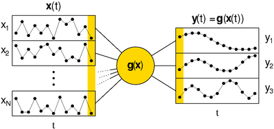

Slow Feature Analysis
A review of work on Slow Feature Analysis (SFA) to consider its application for classification tasks in Human Activity Recognition (HAR).
Introduction
The slowness principle was developed as hypothesis for the functioning of the visual cortex in the brain, which is reponsible for processing visual information .
In that case, the goal is identifying the external causes of changes in the visual experience. Applied to HAR, it could be used to identify the underlying consistent attributes of frequently changing sensor signals.
Method

The optimisation problem solved by Slow Feature Analysis.
\(\begin{align}
y_j(t) := g_j(x(t))
\label{eq:output}\
\end{align}\)
SFA solves the optimisation problem of learning the non-linear functions g(x), which transforms a time-varying input signal x(t) into a slowly-varying output signal y(t).
This extraction must occur instantaneously as shown in \eqref{eq:output} to prevent solutions, which smooth input over time, e.g. a moving average filter.
SFA is guaranteed to find the optimal solution within the considered function space .
\(\begin{align}
\Delta(y_j) := \langle \dot{y}_j^2 \rangle_t
\label{eq:minimisation}\
\end{align}\)
The Δ-value in \eqref{eq:minimisation} represents the objective to be minimised.
The slowness of the output signal is measured as the time average of its squared derivative, low values indicating slowly-varying signals.
The output signal underlies the following constraints:
\(\begin{align}
\langle y_j \rangle_t = 0
\label{eq:zero_mean}\
\end{align}\)
\(\begin{align}
\langle y^2_j \rangle_t = 1
\label{eq:unit_variance}\
\end{align}\)
\(\begin{align}
\forall i < j : \langle y_iy_j \rangle_t = 0
\label{eq:deco_order}\
\end{align}\)
All output signals must have \eqref{eq:zero_mean} a mean of zero and \eqref{eq:unit_variance} unit variance, in order to make their temporal derivative directly comparable.
This also prevents the constant solution, which does not offer any information due to its infinitely slowness.
Furthermore, the output signals must be \eqref{eq:deco_order} decorrelated from each other so that each signal conveys unique information.
Application
Human Action Recognition
Different forms of SFA are applied to regognise the actions of cuboids sampled from video recordings.
These forms include the traditional unsupervised training method, but also methods using weakly supervised information and spatial information to allow action classification.
Multiclass SVMs are used for classification. The results show that SFA improved the classification performance.
Human Fall Detection
Detecting falls of elderly people is a widespread application of HAR methods.
Fan et al. use SFA to transform shape feature sequences, extracted from video recordings, into discriminative information.
Their results compare to other state-of-the-art methods.
Behaviour Analysis
Zafeiriou et al. propose a probabilistic SFA algorithm, which combines slow varying latent space with dynamic time warping techniques to achieve robust sequence time-alignment.
The method is applied to detect facial action units in the MMI database.
Gesture Recognition
Application on time series stemming from the acceleration sensors of a Bluetooth Wiimote controller.
The results compare to state-of-the-art Random Forest classifier with less requiered computation time.
They found that too few training patterns result in overfitting, which can be overcome by using parametric bootstrap.
Implementation
The Modular Toolkit for Data Processinghttp://mdp-toolkit.sourceforge.net (MDP) contains an implementation of SFA in Python.